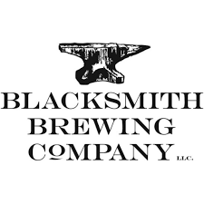

Visit Blacksmith Brewing Company's Website
BLACKSMITH BREWING COMPANY: FOUNDED IN 2008
Blacksmith Brewing Company, located on Main St. in Montana's oldest community, opened on October 25th, 2008. The building that houses our brewery and taproom was built in 1908 and was once the local blacksmith shop. With every brand the blacksmith made he would then burn it into the wall to make sure it was perfect. The brands are still embedded into our walls, leaving the mark of those who have come before. It took a great vision to see what it could become and a lot of hard work. Proud to be serving our community with handcrafted beer brewed with Montana grown and malted grains as well as locally grown hops.
Buy A Physical MT Brewery Passport Today!
Tap the Map to Go Back